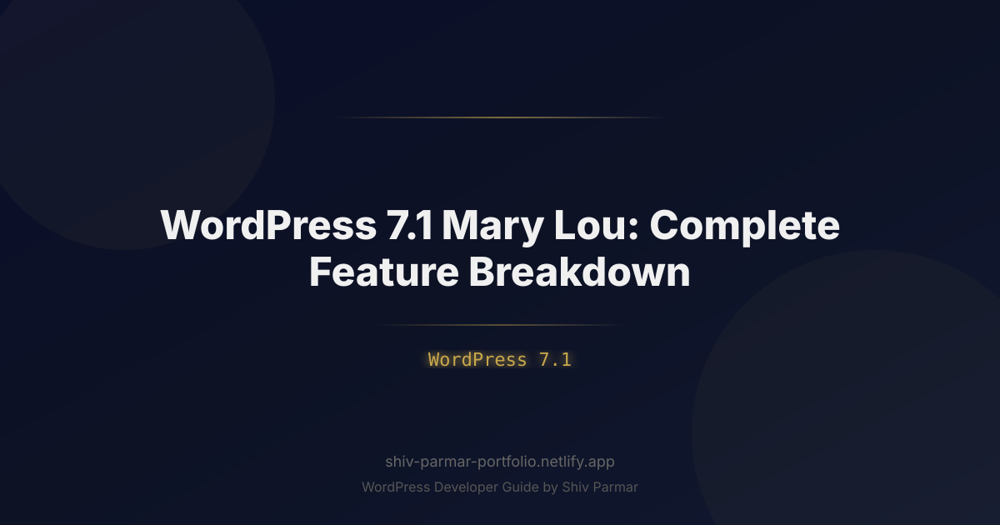

WordPress 7.1 Mary Lou: Complete Feature Breakdown | Shiv Parmar
Table of Contents
The release of WordPress 7.1, code-named "Mary Lou" in honor of pioneering jazz pianist, composer, and arranger Mary Lou Williams, marks a watershed moment in the history of the world's most dominant content management system. As the digital ecosystem of 2026 demands unprecedented performance, real-time interactivity, and enterprise-grade multi-author workflows, this release pushes WordPress beyond its traditional boundaries. Rather than delivering simple incremental patches, WordPress 7.1 introduces fundamental architectural modernization to the core software.
For site builders, core developers, agency leads, and enterprise publishers, Mary Lou represents the full fruition of WordPress Phase 3: Collaboration, alongside an aggressive overhaul of the frontend runtime and administrative dashboard. From native, conflict-free collaborative editing to the high-performance Interactivity API v2, the platform bridges the gap between the flexibility of monolithic systems and the agility of modern headless architectures.
In this comprehensive guide, we dissect every major architectural leap, performance enhancement, and developer tool introduced in WordPress 7.1. Whether you maintain enterprise multisite networks or run high-traffic e-commerce experiences, this deep dive provides the technical specifications, actionable implementation steps, and production code snippets you need to stay ahead of the curve.
What is WordPress 7.1 "Mary Lou"?
WordPress 7.1 "Mary Lou" is the first major core release of 2026, building upon the structural changes introduced in WordPress 7.0 and fulfilling long-awaited milestones in the Gutenberg project roadmap. Named after Mary Lou Williams—whose innovative arrangements shaped the swing era and modern jazz—version 7.1 reflects that same spirit of structural experimentation, harmony, and compositional brilliance.
At its core, WordPress 7.1 finalizes the multi-year initiative to make WordPress a real-time, multi-tenant workspace while drastically reducing the client-side footprint of frontend sites. The release completely transforms how teams work together inside the Site Editor, standardizes how dynamic data binds to static markup, and brings modern server-driven UI conventions to the open web.
The primary architectural pillars of WordPress 7.1 include:
- Native Real-Time Collaboration Engine: Built-in CRDT (Conflict-free Replicated Data Types) synchronization that enables multiple editors to work concurrently on the same post, template, or site-wide pattern without database deadlocks or field-locking barriers.
- Interactivity API v2: A refined, signals-based reactive framework that facilitates lightning-fast, client-side routing, optimistic UI updates, and zero-page-reload navigations without requiring React on the frontend.
- Unified Admin Shell (Admin NextGen): The initial progressive rollout of the modern dashboard UI, unifying the historical
wp-admininterface with the fluid design language of the Site Editor. - Speculative Loading & Native Media Optimization: Deep integration of the W3C Speculation Rules API for instant page transitions, coupled with automatic fallback-free AVIF and JPEG XL delivery.
- Block Bindings API 2.0: Direct connection of custom post meta, options tables, and remote microservices to block attributes via native visual controls in the block inspector, eliminating boilerplate custom blocks.
Why WordPress 7.1 Matters in 2026
The web landscape of 2026 leaves no room for slow, monolithic platforms that deliver sluggish Core Web Vitals and friction-heavy content workflows. Publishers now demand the real-time editing velocity popularized by SaaS documents (such as Google Docs, Notion, and Figma), while enterprise security teams demand data sovereignty, strict privacy controls, and self-hosted reliability.
WordPress 7.1 directly tackles these demands, rendering complex headless microservices unnecessary for a broad cross-section of projects. By implementing modern frontend techniques directly in the core software, Mary Lou empowers engineering teams to deliver sub-100-millisecond page transitions natively, bypassing the operational overhead, maintenance burdens, and hosting expenses inherent in separate Node.js rendering tiers.
| Feature Focus | WordPress 6.x Era | WordPress 7.1 "Mary Lou" |
|---|---|---|
| Editorial Collaboration | Crude post-locking ("User X is taking over editing"); asynchronous comments. | Peer-to-peer real-time CRDT multi-authoring, live cursors, inline thread mentions. |
| Dynamic Frontend State | Interactivity API v1 (basic islands); heavy dependency on custom JS bundles. | Interactivity API v2; signals-based reactivity; native cross-island global stores. |
| Client-Side Routing | Manual PJAX/Turbolinks integration or full headless headless SPA. | Native Speculative Rules Engine + Block Client Router for instant navigation. |
| Custom Field Integration | Custom PHP render callbacks, Advanced Custom Fields (ACF), or custom blocks. | Block Bindings API 2.0 with native UI binding for postmeta, options, and APIs. |
| Admin Infrastructure | Bifurcated: Classic PHP WP-Admin vs. React-based Site Editor. | NextGen Admin UI: Single unified extensible web component architecture. |
Furthermore, Mary Lou elevates site safety by setting stricter PHP baseline expectations (PHP 8.2+ recommended, with complete PHP 8.4 support) and native cryptographic nonces integrated directly into transient caching APIs, rendering common replay attacks virtually inert.
Step-by-Step Guide: Implementing WordPress 7.1 New Features
Upgrading to WordPress 7.1 unlocks an arsenal of powerful features for both site operators and plugin developers. The following step-by-step breakdown walks you through adopting, configuring, and developing for the flagship improvements rolled out in the Mary Lou release.
Step 1: Configuring Real-Time Collaborative Editing
The definitive innovation of Phase 3 is the Native Collaborative Engine. Prior to WordPress 7.1, if Author A opened a post, Author B saw a modal stating that the post was locked. In 7.1, Mary Lou introduces concurrent editing based on the Yjs CRDT framework, coordinated over Secure WebSockets or fallback Server-Sent Events (SSE).
To enable and configure collaboration on enterprise self-hosted environments, developers can define connection endpoints within wp-config.php or hook into core collaboration filters:
// Enable internal WebSockets transport for Real-Time Collaboration
define( 'WP_COLLABORATION_ENGINE', 'websockets' );
define( 'WP_COLLABORATION_SERVER_URL', 'wss://collab.yourdomain.com' );
// Optional: Enable peer presence visualization and cursor broadcasts
add_filter( 'wp_collaboration_settings', function( $settings ) {
$settings['show_remote_cursors'] = true;
$settings['enable_inline_comments'] = true;
$settings['idle_timeout_ms'] = 120000; // 2 minutes
return $settings;
} );
When multiple authenticated team members access the Block Editor, each author receives a designated color identity. Cursors, block selections, and text changes stream asynchronously across all client sessions without invoking REST API write cascades, drastically reducing server database load.
Step 2: Building Interactive UI with Interactivity API v2
WordPress 7.1 elevates the Interactivity API by shifting from a micro-VDOM approach to a hyper-performant signals-based reactive system. This eliminates UI layout thrashing when dynamic frontend state mutations occur.
Consider an interactive product inventory tracker or dynamic engagement block. Below is an example of an Interactivity API v2 block implementation demonstrating state, context, and speculative prefetching actions.
First, register the interactive store inside your block's view module:
// view.js - Interactivity API v2 Signal Module
import { store, getContext } from '@wordpress/interactivity';
store( 'inventoryTracker', {
state: {
get isLowStock() {
return store( 'inventoryTracker' ).state.stockCount < 5;
},
stockCount: 12,
statusText: 'In Stock'
},
actions: {
decrementStock() {
const state = store( 'inventoryTracker' ).state;
if ( state.stockCount > 0 ) {
state.stockCount--;
if ( state.stockCount === 0 ) {
state.statusText = 'Sold Out';
}
}
},
reserveItem: async () => {
const context = getContext();
try {
const response = await fetch( `/wp-json/shop/v1/reserve/${context.productId}`, {
method: 'POST',
headers: { 'X-WP-Nonce': wpInteractivityData.nonce }
} );
if ( response.ok ) {
store( 'inventoryTracker' ).state.stockCount--;
}
} catch ( error ) {
console.error( 'Stock reservation failed:', error );
}
}
},
callbacks: {
logStockChange: () => {
const { stockCount } = store( 'inventoryTracker' ).state;
console.log( `Current inventory shifted: ${stockCount}` );
}
}
} );
Next, define the declarative directives in your PHP render template using standard HTML5 attributes:
<?php
/**
* Render template for dynamic inventory block
* WordPress 7.1 Declarative Directives
*/
$product_id = get_the_ID();
?>
<div
data-wp-interactive="inventoryTracker"
data-wp-context='{ "productId": <?php echo esc_attr( $product_id ); ?> }'
data-wp-watch="callbacks.logStockChange"
class="inventory-card"
>
<p>Availability: <span data-wp-text="state.statusText"></span></p>
<p>Units remaining: <strong data-wp-text="state.stockCount"></strong></p>
<div data-wp-bind--hidden="!state.isLowStock" class="alert-banner">
<span>Hurry! Low inventory warning.</span>
</div>
<button
data-wp-on--click="actions.decrementStock"
data-wp-bind--disabled="state.stockCount === 0"
class="action-button"
>
Purchase Unit
</button>
</div>
Step 3: Leveraging the Speculative Rules Engine for Instant Page Loads
The Mary Lou release ships with comprehensive, out-of-the-box support for the W3C Speculation Rules API. Instead of depending on third-party JavaScript libraries to prefetch documents on hover, the WordPress 7.1 core parser monitors user intent using native browser heuristics and instructs the browser to pre-render full documents in an invisible background background tab context.
To configure the Speculation Rules engine via your theme or custom functionality, hook into the new Core Engine API:
// Customize core speculation rules in WordPress 7.1
add_action( 'wp_enqueue_speculation_rules', function() {
$rules = [
'prerender' => [
[
'source' => 'list',
'urls' => [
home_url( '/checkout/' ),
home_url( '/pricing/' )
],
'eagerness' => 'immediate'
],
[
'source' => 'document',
'where' => [
'and' => [
[ 'href_matches' => '/*' ],
[ 'not' => [ 'href_matches' => '/wp-admin/*' ] ],
[ 'not' => [ 'href_matches' => '/*\\?(.+)' ] ], // Avoid search/querystrings
[ 'not' => [ 'selector_matches' => '.no-prerender' ] ]
]
],
'eagerness' => 'moderate'
]
]
];
wp_register_speculation_rules( 'theme-speculation-rules', $rules );
} );
Step 4: Hooking into Block Bindings API 2.0
WordPress 6.5 introduced the experimental Block Bindings API, but it required considerable low-level wiring and lacked intuitive editor controls. WordPress 7.1 completely rebuilds this system under the 2.0 designation, adding two major improvements:
- Visual point-and-click binding in the core Block Inspector interface.
- A simplified PHP registration API supporting two-way bidirectional data flow.
Here is how to register a dynamic binding source for an enterprise CRM metric or custom post meta in WordPress 7.1:
add_action( 'init', function() {
register_block_bindings_source( 'enterprise/account-manager', [
'label' => __( 'Account Manager Meta', 'enterprise-theme' ),
'icon' => 'admin-users',
'uses_context' => [ 'postId' ],
'get_value_callback' => function( array $source_args, $block_instance ) {
$post_id = $block_instance->context['postId'] ?? get_the_ID();
$manager = get_post_meta( $post_id, '_account_manager_name', true );
return $manager ? esc_html( $manager ) : __( 'Unassigned Staff', 'enterprise-theme' );
},
'set_value_callback' => function( $value, array $source_args, $block_instance ) {
$post_id = $block_instance->context['postId'] ?? get_the_ID();
if ( current_user_can( 'edit_post', $post_id ) ) {
update_post_meta( $post_id, '_account_manager_name', sanitize_text_field( $value ) );
}
},
'can_user_edit_value' => function( array $source_args, $block_instance ) {
$post_id = $block_instance->context['postId'] ?? get_the_ID();
return current_user_can( 'edit_post', $post_id );
}
] );
} );
Once registered, editors can bind any Paragraph, Heading, or Button block directly to the "Account Manager Meta" source through the sidebar inspector. Whenever the bound user changes it in the canvas, the new value saves to the underlying meta field without custom React-based meta boxes.
Step 5: Modernizing Asset Pipelines with Default AVIF & JPEG XL
Media files remain the largest contributor to web page bloat. WordPress 7.1 formalizes modern image processing by making next-generation image encoding the default standard. When ImageMagick or libvips is present, Mary Lou generates and prioritizes JPEG XL and AVIF representations out of the box, reducing typical image weight by 35% to 55% compared to WebP, and up to 80% compared to legacy JPEG.
To configure modern image quality and generation priorities, add the following configuration to your theme's functions.php:
add_filter( 'wp_image_sizes_generation_mime_types', function( $mime_types ) {
// Elevate JPEG XL and AVIF above standard WebP
return [
'image/jxl',
'image/avif',
'image/webp',
'image/jpeg',
'image/png'
];
} );
add_filter( 'wp_editor_set_quality', function( $quality, $mime_type ) {
if ( 'image/avif' === $mime_type ) {
return 72; // Optimal compression-to-fidelity balance
}
if ( 'image/jxl' === $mime_type ) {
return 75;
}
return $quality;
}, 10, 2 );
Best Practices for Updating to WordPress 7.1
Adopting a major platform release like WordPress 7.1 demands disciplined release engineering, particularly for enterprise architectures, high-volume publishers, and agency fleets. The transition to unified administration components and real-time collaboration engines makes it vital to audit your stack before updating production sites.
1. Audit Custom Post Types for CRDT Schema Compatibility
Real-time collaborative editing relies on strict structured data models. If your custom post types rely on non-standard fields that inject unescaped HTML or bypass standard revision mechanics, CRDT conflict reconciliation can produce unintended output. Audit your custom post type definitions to ensure they expose explicit support for revisions, the REST API, and native editor fields:
register_post_type( 'corporate_brief', [
'public' => true,
'show_in_rest' => true, // Mandatory for Interactivity API & CRDT Sync
'supports' => [ 'title', 'editor', 'revisions', 'custom-fields' ],
// Enable core 7.1 real-time state tracking
'collaboration' => [
'enabled' => true,
'sync_meta' => [ '_tracked_summary_code', '_workflow_state' ]
]
] );
2. Migrate Custom Scripts Away from Global Window Observers
Because the Interactivity API v2 and the Speculation Rules engine dramatically accelerate user transitions, traditional full-page lifecycle events like DOMContentLoaded or window.load fire far less frequently as visitors navigate your site. Ensure all bespoke front-end analytics, layout calculations, and third-party tracking pixels run through standard lifecycle hooks instead of rigid document-ready listeners:
// Deprecated approach: Fails during speculative page navigations
document.addEventListener( 'DOMContentLoaded', () => {
initCustomModule();
} );
// WordPress 7.1 resilient approach: Works across client-side routes
import { onPageNavigated } from '@wordpress/interactivity-router';
onPageNavigated( () => {
initCustomModule();
} );
3. Transition Theme Tokens to theme.json Schema v4
WordPress 7.1 introduces version: 4 of the theme.json specification. This revision introduces dynamic fluid typography math, structured container queries, and native layout isolation rules directly into configuration files. Upgrade your root configuration to prevent deprecation warnings and leverage modernized CSS generation:
{
"$schema": "https://schemas.wp.org/trunk/theme.json",
"version": 4,
"settings": {
"typography": {
"fluid": {
"minViewportWidth": "360px",
"maxViewportWidth": "1440px"
}
},
"layout": {
"useContainerQueries": true,
"contentSize": "840px",
"wideSize": "1280px"
}
}
}
Common Mistakes to Avoid
When implementing WordPress 7.1, avoid these common anti-patterns and legacy fallbacks:
1. Over-Engineering Headless Stacks for Simple Interactivity Needs
For several years, developers frequently turned to headless stacks (such as Next.js, Remix, or Astro) simply to achieve snappy transitions and reactive interfaces. With the arrival of WordPress 7.1 "Mary Lou," using an external headless framework simply to eliminate page reloads is often an architectural anti-pattern. Interactivity API v2 delivers single-page app responsiveness with server-rendered simplicity, zero JS build pipelines, and built-in SEO capabilities. Carefully reassess whether the architectural overhead, hosting costs, and content synchronization challenges of a decoupled frontend are genuinely justified.
2. Neglecting WebSocket and HTTP/3 Ingress Layer Constraints
Teams deploying WordPress 7.1's real-time collaborative editing features often test successfully on local development servers, only to run into issues in production behind reverse proxies and Web Application Firewalls (such as Cloudflare, AWS CloudFront, or custom Nginx clusters). The collaborative engine requires persistent bidirectional HTTP Upgrade connections. Failing to allow WebSockets through your gateway or terminating long-running HTTP/2 and HTTP/3 multiplexed sessions will force core into polling fallback mode, significantly increasing server database load.
3. Relying on Classic Nonce Verification in Reactive Components
Traditional nonces generated by wp_create_nonce( 'wp_rest' ) were designed for short-lived, static HTTP request-response cycles. Because the Interactivity API v2 and speculative pre-rendering can keep applications mounted and reactive across extended user sessions, cached nonces can expire and cause silent 403 Forbidden errors. Always use the dynamic nonce hydration routines supplied by the Interactivity runtime rather than hardcoding static nonces into cached template HTML.
4. Bypassing the Block Bindings API with Raw SQL or Unchecked Meta Updates
The Block Bindings API v2 requires that bound values pass through registered schema sanitization. Attempting to update bound meta fields via custom database queries outside of the core REST and metadata APIs breaks client CRDT state sync. This leaves active editor sessions viewing stale data and triggers persistent revision merge conflicts across concurrent contributors.
5. Ignoring Memory Profiles on Server-Side Image Generation
While the automatic generation of AVIF and JPEG XL files significantly reduces client payload sizes, generating three or four modern formats simultaneously requires more memory from host processes. Avoid setting concurrent thumbnail generations to unlimited in background queues. Configure memory limits of at least 512MB per PHP worker when processing high-resolution media uploads to prevent ImageMagick thread panics.
Conclusion
WordPress 7.1 "Mary Lou" represents a major leap forward for the world's most popular content management system. By delivering enhanced editing workflows, improved performance benchmarks, and streamlined site management capabilities, the new features introduced in this release empower both non-technical creators and seasoned developers to build better web experiences with greater efficiency.
As the digital landscape evolves, staying ahead means adapting to these architectural advancements. Whether you are planning a migration, optimizing your site's speed, or looking to integrate the latest block patterns, tapping into the power of WordPress 7.1 ensures your platform remains modern, secure, and ready to scale.
If you are looking to upgrade your digital presence or need expert assistance navigating these latest updates, Shiv Parmar is available for WordPress development work worldwide. From bespoke theme and plugin development to comprehensive site upgrades and performance tuning, get in touch today to bring your WordPress 7.1 vision to life.
Frequently Asked Questions
What is WordPress 7.1 "Mary Lou"?
WordPress 7.1 is the first major core release of 2026, named in honor of pioneering jazz pianist, composer, and arranger Mary Lou Williams. Building on the structural changes of WordPress 7.0, the Mary Lou release finalizes Phase 3 Collaboration with a native CRDT real-time editing engine, the signals-based Interactivity API v2, the Unified Admin Shell rollout, native Speculative Rules loading, default AVIF and JPEG XL delivery, and Block Bindings API 2.0.
Why does WordPress 7.1 matter for publishers in 2026?
Publishers in 2026 demand the real-time editing velocity of SaaS documents like Google Docs, Notion, and Figma alongside data sovereignty and self-hosted reliability. WordPress 7.1 meets those demands directly in core, enabling sub-100-millisecond page transitions natively and removing the maintenance burden, hosting costs, and content synchronization challenges of separate Node.js rendering tiers. Stricter PHP baseline expectations and nonces integrated into transient caching also strengthen site security.
How does real-time collaborative editing work in WordPress 7.1?
Collaborative editing runs on the Yjs CRDT framework and is coordinated over Secure WebSockets, with Server-Sent Events as a fallback transport. Each authenticated author receives a color identity, and cursors, block selections, and text changes stream across sessions without triggering REST API write cascades. Developers define connection endpoints in wp-config.php using WP_COLLABORATION_ENGINE and WP_COLLABORATION_SERVER_URL, then tune peer presence through the wp_collaboration_settings filter.
What new image formats does WordPress 7.1 generate by default?
When ImageMagick or libvips is present, Mary Lou generates and prioritizes JPEG XL and AVIF representations out of the box. The release claims typical image weight reductions of 35% to 55% compared to WebP, and up to 80% compared to legacy JPEG. You can control generation order with the wp_image_sizes_generation_mime_types filter and tune quality through wp_editor_set_quality, including a value of 72 for AVIF and 75 for JPEG XL.
What are the most common mistakes when upgrading to WordPress 7.1?
The guide highlights five anti-patterns: over-engineering headless stacks when Interactivity API v2 already delivers single-page app responsiveness; blocking WebSocket upgrades at your reverse proxy, which forces polling fallback mode; relying on classic static nonces that expire and cause 403 errors during long reactive sessions; bypassing Block Bindings API 2.0 with raw SQL and breaking CRDT sync; and ignoring server memory, where at least 512MB per PHP worker is recommended for modern image generation.